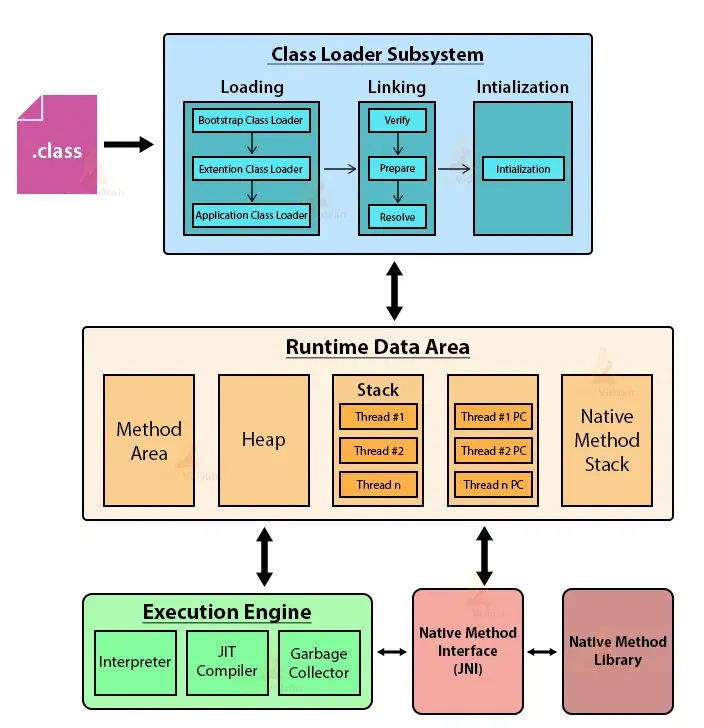

1. JVM Architecture
2. Class Loader Subsystem
The class loaders load the compiled class file. Class loader system contains 3 types of class loaders.
1.1. Bootstrap class loader
Bootstrap class Loader is responsible for loading all core java API classes. These are all classes that exist inside rt.jar which are available in all JVMs by default. Bootstrap class Loader loads classes from bootstrap class path. However it's implementation is in native languages(C, C++) but not in java.
Bootstrap Class Path is JDK/JRE/lib
1.2. Extension class loader
Extension Class Loader is a child class of Bootstrap class loader which is responsible for loading all classes from the extension class path in java. However, it's implementation is in java only. The Extension Class Path is : JDK/JRE/lib/ext
1.3. Application class loader
Application Class Loader is a child class of Extension class loader which is responsible for loading classes from application class-path. It's implementation is also in java. The Application class path is our environment class path.
Phases Of Class Loading
1) Loading
Loading phase involves accepting the binary representation (bytecode) of a class or interface with a specific name, and generating the original class or interface from that. The JVM uses the ClassLoader.loadClass() method for loading the class into memory.
2) Linking
Once a class is loaded into the memory, it undergoes the linking process. Linking a class or interface involves combining the different elements and dependencies of the program together. As the name suggests making required links with each other.
3) Initialization
This is the final stage of class loading. Initialization involves executing the initialization code of the class or interface. This can include calling the class's constructor, executing the static block, and assigning values to all the static variables.
3. JVM Memory Area
The division of total Memory area of JVM is in 5 parts :
1. Method Area :
In the method area, One area will be allocated for each JVM. It will be created at JVM startup. Class level binary information & static variables reside in this area. Also Constant pools will be saved inside method area. Further It can be accessed by multiple threads simultaneously, therefore it is not thread-safe.
2. Heap Area :
One area will be allocated for each JVM. It will be created at JVM startup. Objects reside in this area. It can be accessed by multiple threads simultaneously, therefore it is also not thread-safe.
How can we find allocated heap area ?
1 Runtime r = Runtime.getRuntime();
2 r.maxMemory(); r.InitialMemory(); r.freeMemory();
3 Runtime is inside java.lang package is a Singleton class.
How to set maximum & minimum heap sizes ?
1. By using command prompt execution of program :
java -Xmx512m JavaProgramFileName enter
java -Xms64m JavaProgramFileName enter
Where Xmx indicates Maximum Memory & Xms indicates Minimum Memory. Heap memory is finite memory but based on our requirement we can set max & min heap sizes.
2. By Setting 'JAVA_OPTS' as a system variable
JAVA_OPTS="-Xms256m -Xmx512m"
After that in a command prompt run the following command:
SET JAVA_OPTS="-Xms256m -Xmx512m"
This setting indicates
allocating minimum 256MBs of heap
allocating maximum 512MBs of heap
3. Stack Area :
It is available per thread unlike Method & Heap area as they are one per JVM. Each entry in stack is called Stack frame or activation record. Also it is thread-safe as it allocates one memory for each thread. Furthermore, Each stack frame has three parts : local variable array, operand stack and frame data.
Local Variable Array : It contains values of local variables & method parameters.
Operand Stack : JVM uses it as workspace, some instruction push the values to it & some pop from it & some other to performs arithmetic operations.
Frame Data : It contains all symbolic references related to the method. It also contains reference of exception related to method.
4. PC Registers :
(Program Counter Registers) : Internally used by JVM. For every thread JVM creates a separate PC register. In brief PC register contains address of currently executing threads.
5. Native Method Stacks :
For every thread JVM creates a separate native method stack if its native method call.
4. Execution Engine
It is a central component of JVM and responsible for executing .class files. It mainly contains two parts : Interpreter & JIT compiler
Interpreter :
Interpreter reads & interprets bytecode, converts it into machine code/native code line by line.
Because of line by line performance of system goes down. Then JIT compiler comes into picture in jdk 1.1 version.
JIT Compiler :
The primary purpose of JIT compiler is to improve performance. In fact, Internally it maintains a separate count for every method. Whenever JVM comes across any method call, first that method is interpreted normally by the interpreter and JIT compiler increments the corresponding count variable accordingly.
5. Difference between PermGen Space and MetaSpace.
PermGen is the memory area for storing class data like static variable,byte code and etc. By default 64 Mb is allocated for PermGen. It can be tuned by using -XXMaxPermSize.
In Java 8, PermGen method area replaced with MetaSpace. They have moved permGem to the separate memory in the native OS and that is called MetaSpace. It can by default auto increases its size. In MetaSpace, classes can load and unload during the lifespan of the JVM.
| Sr. No . | Key | PermGen | MetaSpace |
|---|---|---|---|
| 1 | Basic | PermGen is the memory area for storing class data like static variable,byte code and etc | In Java 8, PermGen method area replaced with MetaSpace |
| 2 | Default Memory Allocation | By default 64 Mb is allocated for PermGen | It can by default auto increases its size |
| 3 | Tuned-up Memory Flag | It can be tuned by using - XXMaxPermSize. | We can restrict upper bound of the memory by -XX:MaxMetaspaceSize |
| 4 | Memory Area | It is a special Heap space. | Since Java 8, It is now separate memory area in the native OS |
6. Java Memory Architecture: Stack vs. Heap
Java Virtual Machine (JVM) manages memory by dividing it into two primary areas: Stack and Heap.
Stack Memory:
- Purpose: Stores temporary variables, primitive data types, method call frames, and references to Heap objects.
- Characteristics: "Each thread has its own stack memory." This means multiple threads will have separate stack copies."Variables within a scope is only visible and as soon as variables goes out of the scope it gets deleted from the stack in the LIFO order." This highlights its temporary nature and Last-In, First-Out (LIFO) deletion mechanism.If stack memory becomes full, a "Stack Overflow Error" occurs.
- Contents: Temporary Variables: Variables defined within a method block with a limited lifespan.
- Separate Memory Blocks for Methods: Each method call creates a "memory frame" on the stack to hold its variables and execution context.
- Primitive Data Types: Stores the actual values of primitives (e.g., int i = 10;).
- References to Heap Objects: While objects themselves reside in the Heap, the variables that point to these objects are stored on the stack (e.e., Person obj; where obj is the reference).
Heap Memory:
- Purpose: Stores all Java objects and String literals (within the String Pool).
- Characteristics: "Heap memory is always larger than a stack." "All the threads share a common Heap memory." Unlike the stack, the Heap is a shared resource among all threads.
- Objects created using the new keyword are allocated in the Heap.
- Subdivisions: The Heap is further divided into:
- Young Generation: Eden Space: Where "whenever you created a new object it goes inside Eden."
- Survivor Spaces (SO and S1): Objects that survive a minor garbage collection in Eden are moved here. These spaces alternate roles during GC cycles.
- Old Generation (Tenured/Permanent Generation): Objects that "survive a particular threshold" (i.e., reach a certain "age" through multiple minor GC cycles) are "promoted" here. "here the GC runs very less periodically very very less as compared to the young."
- Non-Heap Memory (Meta Space): Purpose: Stores "class variables," "class metadata," and "constants."
Evolution: "In the previous version of java I think before Java 7 it is called Prime Jam." However, "now it is no more use it is use the meta space."
Key Difference from PermGen: "Prem gem was a part of Heap memory and it is not Expendable so as soon as it will get filled up you will get out of memory error but here meta space is out of this Heap... and it is expanded Expendable as you required." This means Meta Space can grow dynamically, reducing "Out Of Memory" errors related to metadata.